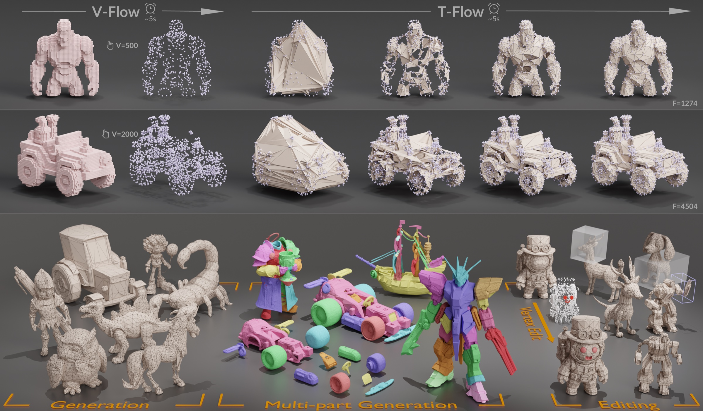
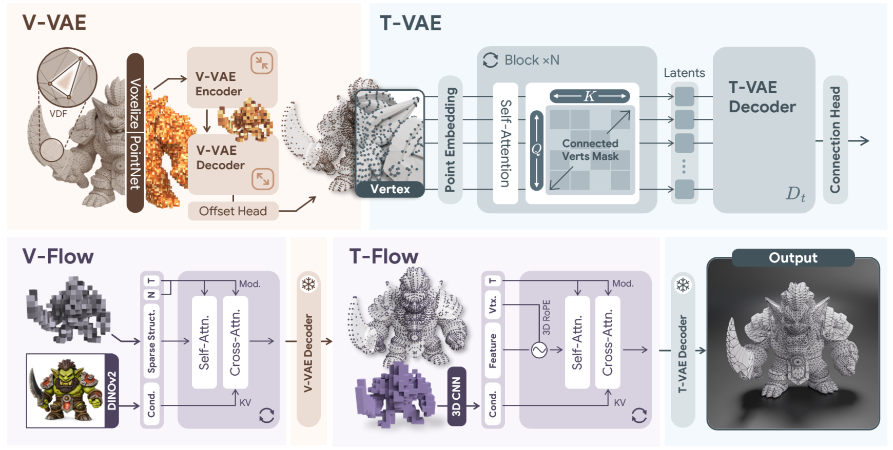
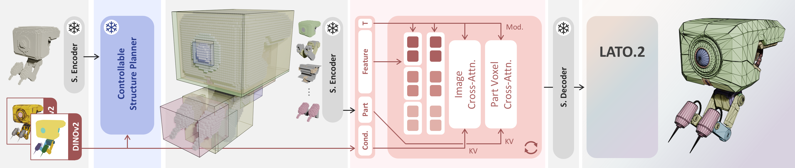

Vertex Flow
Generate a structured vertex latent on a shared voxel scaffold, then decode a controllable number of high-resolution vertices with learned sub-voxel offsets.
1Huazhong University of Science and Technology · 2Meshy AI 3Independent Researcher · 4Technical University of Munich
* Equal contribution · † Corresponding author This work was completed during internships at Meshy AI.

Flow matching over carefully designed latent representations has recently emerged as a powerful paradigm for topology-aware mesh generation. Existing approaches, however, model vertices and connectivity jointly in a shared latent space, entangling continuous vertex geometry with discrete combinatorial structure. This complicates flow learning and manifests as drifting vertices and broken surfaces.
We present LATO.2, a factorized flow matching framework that decomposes mesh generation into a vertex flow followed by a connectivity flow conditioned on realized vertices, with both stages anchored to a shared coarse voxel scaffold. Dedicated VAEs recover vertices at sub-voxel precision and embed discrete connectivity into a continuous latent space.
This factorization uniquely enables part-wise high-resolution generation and topology-adaptive editing. Experiments show that LATO.2 surpasses state-of-the-art topology-aware mesh generators in geometric fidelity and connectivity quality.
Core Idea
Vertex positions are continuous geometry. Connectivity is a relational structure over vertices that already exist. LATO.2 gives each signal its own latent space and flow.
Generate a structured vertex latent on a shared voxel scaffold, then decode a controllable number of high-resolution vertices with learned sub-voxel offsets.
Condition on the realized vertices, sample per-vertex topology features, and decode symmetric pairwise edge probabilities before recovering faces.
Pipeline
V-VAE recovers precise geometry with sub-voxel offsets, T-VAE maps discrete connectivity into a continuous latent space, and V-Flow and T-Flow generate the two factors in sequence.

Progressive sparse decoding predicts an offset from each surviving voxel center, recovering precise vertex positions while reducing quantization error.
T-VAE encodes the discrete adjacency relations into continuous per-vertex topology latents that can be decoded back into pairwise connectivity.
The target vertex count is injected into V-Flow together with visual features, guiding the vertex latent that V-VAE decodes into the realized vertex set.
Conditioned on the realized vertices, T-Flow samples the topology latent; T-VAE then decodes pairwise connectivity and face loops recover the mesh.
Generation Result
V-Flow first generates the vertex set, and T-Flow then predicts connectivity conditioned on the realized vertices to form the final mesh.
By injecting different target vertex counts into V-Flow under the same generation condition, LATO.2 produces meshes with controllable mesh complexity.
Actual vertices: —
Actual vertices: —
Actual vertices: —
Actual vertices: —
Actual vertices: —
Actual vertices: —
Application 01
Each part uses the full latent capacity before T-Flow reconnects the recomposed vertex set, enabling substantially higher mesh resolution.

The coarse structure is partitioned and each part is normalized to occupy the complete latent volume. V-Flow generates every part at full capacity, then the vertices are transformed back and connected by T-Flow. The result is denser and more detailed than monolithic generation at the same latent resolution.
Application 02
Edited or recomposed vertices are passed back to T-Flow so connectivity can adapt without hand-authored topology operations.
Users can stitch vertex sets from different meshes or rotate and translate a local part. T-Flow regenerates connectivity around the affected regions, bridging new junctions while avoiding stretched faces and self-intersections. No mesh-specific re-optimization is required.
Comparison
On geometry-conditioned mesh generation, LATO.2 achieves the strongest performance across all reported surface metrics.

Reference
@misc{long2026lato2factorized3dmesh,
title={LATO.2: Factorized 3D Mesh Generation with Vertex and Topology Flow},
author={Hang Long and Tianhao Zhao and Junkai Lin and Youjia Zhang and Huipeng Guo and Rendong Liang and Jiale Xu and Jozef Hladký and Matthias Nießner and Yuanming Hu and Wei Yang},
year={2026},
eprint={2607.10623},
archivePrefix={arXiv},
primaryClass={cs.GR},
url={https://arxiv.org/abs/2607.10623},
}